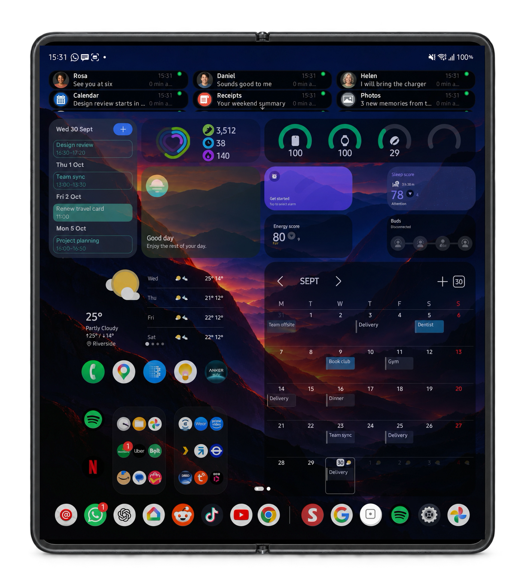
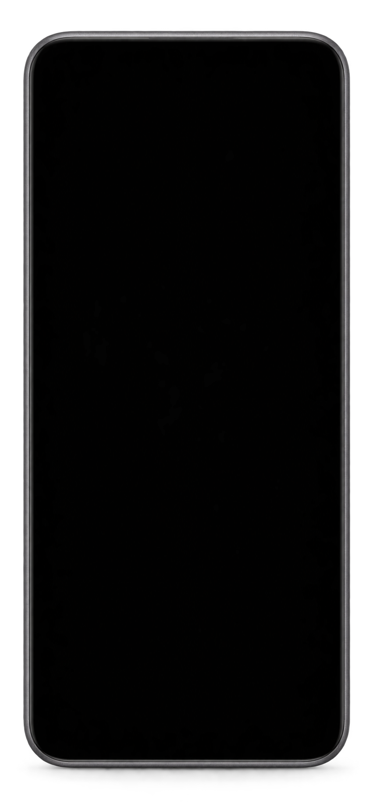
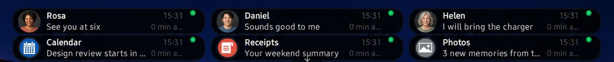

◐
App Zero
One app owns the page left of home. Swipe right from page zero and you are in it.
Home screen launcher
A panel opens over your home screen with that app's notifications, its shortcuts, and one of its widgets running live. Read it, tap what you need, let go. The app never launches.



The panel
Most launchers answer a long press with a few shortcuts. Arcadia adds the app's notifications and one of its widgets, and keeps the panel open until you lift your finger.

Live ones and the ones you already swiped away, kept per app and scrollable inside the panel.
Whatever the app offers: a scene, a chat, a search. No loading screen first.
Pick a widget per app and it runs inside the panel, updating as it would on the home screen.
Notifications
Recent notifications sit across the top of the home screen, so the thing you reached for your phone to check is readable without pulling anything down. Tap one to open it, swipe it away when you are done.

Sender, message and arrival time on the card. Most of the time that is the whole errand.
Swiping the shade does not lose them. Each app keeps its own history, including the images they arrived with.
Hold an app and its notifications are in the panel, live ones and cleared ones together, scrollable.
Adaptive layouts
Arcadia stores a complete home screen configuration for each display a device exposes — pages, grid, widget placement and sizing, folders and dock. On a single-screen phone that is one layout. On a foldable or a device with an external display, each one is configured once and restored as the device switches, rather than being stretched or reflowed from the layout beside it.

App Blocks
Name your Google Home routines once and they sit under the Home icon. Turning the lights off on the way out is a press and a tap, instead of opening the app and waiting for it to load.

Widgets
Arcadia hosts standard Android app widgets and adds three things the platform launcher does not: several widgets sharing a single grid slot, independent resizing and content scaling, and a widget that runs inside an app's panel instead of on the home screen.

Control
One app owns the page left of home. Swipe right from page zero and you are in it.
Pick a launcher app, then choose which games appear in its panel. The library sits under one icon.
Hidden apps leave home, the dock and search. They stay installed and still work.
Kept per app, with the images they arrived with, after the shade has been cleared. Clear one app or all of them.
Pages, folders, widgets and settings saved to a file you keep. New phone, same home screen.
Each display holds its own pages, grid and widget sizes, so changing form factor rearranges nothing.
Privacy
Arcadia never asks for network access, so Android refuses any outbound connection it could attempt. Your notifications, your layout and your location stay on the phone.
Everything Arcadia stores goes when you uninstall it. Read the policy.